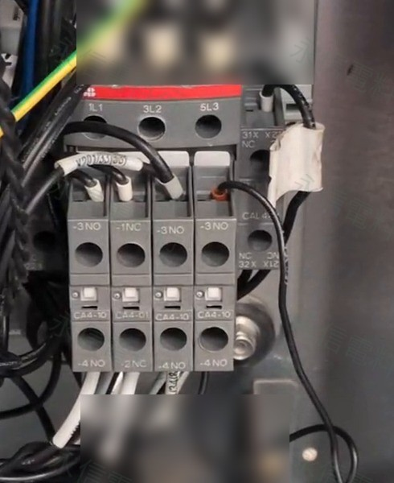

電梯屬涉及人身安全的專用設備。本篇只整理規格核對與故障分析方向，不提供現場繞過安全迴路、強制吸合或變更原廠安全邏輯的方法。實際維修、改線與零件替換應由具資格且熟悉該設備的維保人員依原廠文件執行。
工業現場常見的替代思路，是先比對接觸器的主接點容量、線圈電壓與輔助接點數量；在一般機台上，這些確實是重要條件。但當元件位於電梯、起重、升降或其他 OEM 專用控制系統時，「電氣數字看起來相符」並不等於「系統一定可直接接受」。

本案發生了什麼？先只談已確認的事
現場設備後續確認為 KONE 通力電梯。原控制盤接觸器型號記錄為 Siemens 3RT1023-1BP40，右側輔助接點為 Siemens 3RH1921-1EA02。在跨品牌替換時，曾採用 ABB AF38-30-11-13，並搭配 ABB 的輔助接點模組。
第一次比對時發現一個具體差異：Siemens 官方資料將 3RH1921-1EA02 標示為 2NC 的側裝輔助接點，而 ABB CAL4-11 的官方資料則為 1NO + 1NC。因此若只依原本的「物理位置」逐條移線，而沒有重新依端子功能確認，就可能把原本需要 NC 邏輯的回路接到 NO 端。
這個差異在現場被提出後，工程人員後續亦重新進行查線與複查；然而設備仍未恢復正常運轉。因此本案不能把最初的 NO／NC 對應差異當成唯一故障根因，也不能因此判定 ABB 接觸器本體有瑕疵。
為什麼後來知道「是 KONE」之後，判斷會不同？
KONE 官方零件系統可查到料號 KM51082803，其產品描述直接列出 Siemens 3RT2026-1BP40，規格包含 230VDC 線圈、25A AC-3、3NO 主接點及 1NO+1NC 輔助接點，並列在部分 KONE 3000 MiniSpace、3000S MonoSpace、MiniSpace、TranSys 產品家族，以及 KDH／KDM Drive Family 之下。
這項官方資料的意義是：KONE 的確存在以特定 Siemens 接觸器作為原廠零件配置的系統。但它不代表「所有 KONE 電梯都只能用 Siemens」，也不能反過來證明本案的 3RT1023-1BP40 一定要由 3RT2026-1BP40 直接取代。若沒有取得本台設備的 KONE 控制／驅動版本、KM 料號與原廠 replacement chain，就不應把兩顆 Siemens 型號硬連成 1:1 後繼關係。
ABB AF 與舊式接觸器，差異也不只容量
ABB AF38-30-11-13
ABB 官方資料說明 AF 系列採用 電子線圈介面，AF38-30-11-13 可接受 100～250V 50/60Hz 或 DC 控制，並具內建突波保護；本體配置 1NO+1NC 輔助接點。
Siemens 舊系統附件
本案原有 3RH1921-1EA02 為 2NC 側裝輔助接點。即使兩套方案都能做出相同「總數量」的 NO／NC，也仍須確認端子位置、實際使用哪一組接點，以及控制器期待的回授邏輯。
因此，跨品牌替代不應只問「這顆幾安培？」或「線圈是不是 230V？」；還要確認線圈驅動架構、輔助接點拓撲、控制器輸出條件、回授／互鎖用途、動作與釋放特性，以及 OEM 是否有指定或驗證過的零件配置。
這次 ABB 有動作，為什麼仍不能直接下結論？
現場影片可觀察到 ABB 接觸器確實產生機械動作，所以「完全沒有收到任何控制、從頭到尾完全無法吸合」並不符合影片現象。但影片本身無法告訴我們：吸合時 A1-A2 的實際波形與電壓、控制器是否隨後撤銷命令、哪一組回授沒有成立，或其他安全鏈條件是否同時滿足。
換句話說，有吸合只證明一部分；它不等於整個 OEM 控制邏輯已經接受這組替代配置。若要把原因進一步分成「控制器主動撤銷」或「線圈／電源相容問題」，仍需要同步量測控制電壓、故障碼與回授接點狀態。這些資料本案並未完整取得，因此文章不作推定。
OEM 專用設備跨品牌替換，建議至少核對 7 件事
設備品牌與控制系統
先確認元件裝在哪一台設備、哪個控制盤／驅動架構，而不是只看拆下來的零件。
原件完整型號與附件
接觸器本體、側裝／前裝輔助接點、線圈尾碼與其他附件都要一起記錄。
主接點容量與使用類別
AC-1、AC-3、馬達功率與額定電流要依實際負載核對，不能只選更大安培數。
線圈電壓與驅動架構
確認 AC／DC、額定範圍，以及固定額定電磁線圈或電子控制式寬電壓線圈等差異。
NO／NC 與端子拓撲
功能對功能核對，不依外觀位置「照位置移線」。
回授、互鎖與安全鏈
要知道每一組輔助接點在控制器裡的用途，是否為運轉允許、互鎖、狀態回授或安全監控。
OEM 原廠料號／後繼料
涉及電梯、起重與專用機械時，優先查設備原廠料號與明確 replacement 資料；沒有證據時，不宣稱跨品牌「直接替代」。
這個案例最後能下什麼結論？
本案 ABB 方案後續未完成正常運轉驗收，客戶改採原設備相容方向處理；由於沒有取得最後實際更換型號、完整維修紀錄與最終故障分析，因此不對最後是哪一顆零件修復設備、也不對單一根因作結論。
比較合理的技術結論是：當既有 OEM 系統已圍繞特定接點配置、線圈特性與回授邏輯設計時，優先使用原型號或設備原廠／元件原廠明確建議的後繼型號，通常能降低現場調整與相容性風險。這不是在說 ABB 不適合電梯，也不是在說所有 KONE 都只接受 Siemens；而是提醒跨品牌替代必須從「元件規格」提升到「整個控制系統」層級來核對。
永信的規格核對原則也因此再多一層
若是一般工業元件，我們會先比對完整型號、電壓、容量、接點與安裝條件；若元件來自電梯、起重、升降、安全迴路或 OEM 專用設備，還會優先詢問設備品牌、機型／控制系統與原廠料號。沒有足夠證據時，不把「看起來能用」寫成「可直接替代」。
延伸閱讀：同樣是接觸器，線圈架構也可能完全不同
富士電機 SC 系列本身就同時存在一般固定額定線圈與 SC-N6 以上 SUPER MAGNET；ABB AF 則採電子線圈介面。這些差異說明「同樣是 220V」仍不足以判斷跨品牌替代。
核對依據與資料邊界
- KONE Parts｜KM51082803：可確認 KONE 官方零件系統中的 Siemens 3RT2026-1BP40 與部分 Product / Drive Family；不作為本案原件 3RT1023 的直接後繼證明。
- Siemens｜3RH1921-1EA02 Datasheet：官方標示 2 NC、lateral auxiliary switch。
- ABB｜AF38-30-11-13：電子線圈介面、100～250V AC/DC 控制範圍與本體輔助接點資料。
- ABB｜CAL4-11：側裝瞬時 1NO+1NC 輔助接點。
本篇現場經過只記錄已取得的資訊；未取得的最終 KONE 控制系統版本、KM 原廠料號、最後替換型號、控制波形與故障碼均不自行補寫。